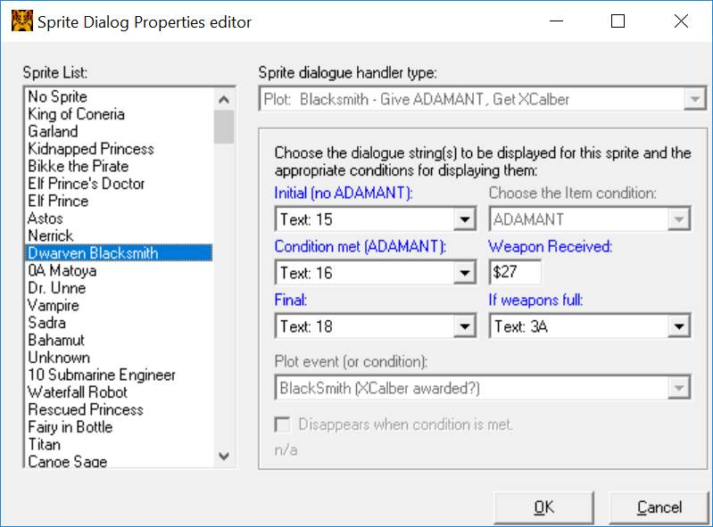
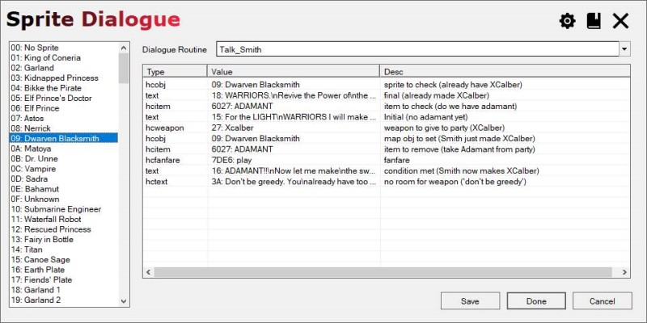

Sprite Dialogue Data
Background
The Sprite Dialogue Editor handles the events found in the dialogue event routines (found in Bank E of a clean FF1 ROM image). These routines specify a series of actions, and typically refer to either a hardcoded value or a collection of parameters to identfy in-game entities.
- I didn't have the source for FFHPlus, so I'd have to write it from scratch;
- It worked for ROM, but how could I make it work for assembly?
Sprite Data
Sprites, Events, and Flags
Sprite Table
Sprite Routine Params Table
Sprite Routine Jump Table
Sprite Routines
The .dialogue File
[VALUETYPES]
[Label_TalkJumpTable]
[Label_TalkJumpTable]
value=lut_MapObjTalkJumpTbl
desc=Label denoting the start of the Talk handler jump table[Label_EndParsingMarker]
[Label_EndParsingMarker]
value=|:endtalkparsing
desc=Marker that signals the end of talk handler parsing
Dialogue routines
[RoutineLabel]desc={Description of the routine}bankaddr=0x{hex address}elem0={type}|{funcoffset}|{paramindex}|{comment}...
elemN={type}|{funcoffset}|{paramindex}|{comment}| Field name | Detail |
|---|---|
| Routine Label | A label identifying the routine. In ROM Projects Only used to identify the routine by name. In Assembly Projects The name of the routine in the assembly source file. The label here must match the name of the routine label
in the assembly source file verbatim. |
| desc | A description of the field. This is not used by FFHEx; it was used by previous external editing tools. |
| bankaddr | The in-bank address of the start of the routine. Pay close attention to the fact that this is **NOT** a ROM offset. Using
a ROM offset here will likely crash your game or corrupt memory when
the event fires. |
| elem[0 - N] | A trio of pipe-separated values defining a dialog routine element. type the element value type, as specified in Values Types below. funcoffset offset in bytes from the start of the routine paramindex index into the sprite's 4-element parameter array, -1 if not used (i.e. hardcoded). comment shown in the editor to help identify the element's purpose. |
Value Types
Param types
| Type name | Detail |
|---|---|
| text | Index of dialog text (pointer table) |
| spr | Index of a sprite, this is a reference to another sprite. This can be any sprite in the game, not just the ones on the current map. |
| obj | Same as spr (visibility change - semantic difference) |
| event | Same as spr (event flag check - semantic difference) |
| battle | Index of a battle |
| item | Index of item, added to(unsram + $20). Index is added to the RAM address specified by the unsram RAM value. |
| weapon | Index of a weapon |
| gold | Index of a gold item |
Hardcoded types
| Type name | Detail |
|---|---|
| hctext | 1-byte index of dialog text (index into the text pointer table) |
| hcspr | 1-byte sprite index |
| hcobj | 1-byte sprite index - semantically, a visibility change |
| hcevent | 1-byte sprite index - semantically, an event flag check (has this event happened yet?) |
| hcbattle | 1-byte battle index |
| hcitem | 2-byte address of item (includes unsram + $20). This is the actual RAM address of the item. |
| hcmap | 2-byte overworld map object (canal, bridge, etc.). This is the RAM address of the overworld object in question. |
| hcweapon | 1-byte weapon index |
| hcgold | 1-byte gold item index |
| hcitemorcanoe | 2-byte item or canoe. This is the RAM address of the object in question. |
| hcitemormap | 2-byte item or Overworld map object. This is the RAM address of the object in question. |
| hcfanfare | 2-byte value to increment the sound register or ignore it: E6 7D = play the sound EA EA = on't play the sound |
| hcnntele | 1-byte, index of NN teleport |
| hcnotele | 1-byte, index of NO teleport |
| hcuint8 | 1-byte decimal value |
| hcbyte | 1-byte hex value |
An example
FFHPlus
I took inspiration from FFHPlus, which shows the elements of the event and editing on many of them. The three Text fields are parameters. The Weapon received and the "Weapon slots full" text are hardcoded.

FFHEx

In the .dialogue file
The Blacksmith's Routine
The elements in the editor reflect what is in the ".dialogue" file. This is how an entry in the file looks as plain text:
[Talk_Smith]
desc=Dwareven Blacksmith
bankaddr=0x936C
elem0=hcobj|0x1|-1|sprite to check (already have XCalber)
elem1=text|0x8|3|final (already made XCalber)
elem2=hcitem|0xB|-1|item to check (do we have adamant)
elem3=text|0x10|1|Initial (no adamant yet)
elem4=hcweapon|0x18|-1|weapon to give to party (XCalber)
elem5=hcobj|0x1D|-1|map obj to set (Smith just made XCalber)
elem6=hcitem|0x22|-1|item to remove (take Adamant from party)
elem7=hcfanfare|0x24|-1|fanfare
elem8=text|0x27|2|condition met (Smith now makes XCalber)
elem9=hctext|0x2A|-1|no room for weapon ('don't be greedy')Same routine with elements highlighted
[Talk_Smith]
desc = Dwareven Blacksmith
bankaddr = 0x936C
elem0 = hcobj | 0x1 | -1 | sprite to check (already have XCalber)
elem1 = text | 0x8 | 3 | final (already made XCalber)
elem2 = hcitem | 0xB | -1 | item to check (do we have adamant)
elem3 = text | 0x10 | 1 | Initial (no adamant yet)
elem4 = hcweapon | 0x18 | -1 | weapon to give to party (XCalber)
elem5 = hcobj | 0x1D | -1 | map obj to set (Smith just made XCalber)
elem6 = hcitem | 0x22 | -1 | item to remove (take Adamant from party)
elem7 = hcfanfare | 0x24 | -1 | fanfare
elem8 = text | 0x27 | 2 | condition met (Smith now makes XCalber)
elem9 = hctext | 0x2A | -1 | no room for weapon ('don't be greedy')
Source with element annotations
Talk_Smith:
LDY #OBJID_SMITH ; check Smith's event flag to see if we already made ;|:elem0
JSR CheckGameEventFlag ; the Xcalbur for the party
BCC @WantSword ; if he already made it....
LDA tmp+3 ; ... then simply print [3] ;|:elem1
RTS
@WantSword:
LDA item_adamant ; otherwise check to see if party has the Adamant ;|:elem2
BNE @HaveAdamant ; if not...
LDA tmp+1 ; ... simply print [1] ;|:elem3
RTS
@HaveAdamant: ; otherwise, make the sword!
JSR FindEmptyWeaponSlot ; find an empty slot
BCS @WontFit ; if no empty slot, sword won't fit
LDA #WPNID_XCALBUR ; put the XCalbur in the previously found slot ;|:elem4
STA ch_stats, X
LDY #OBJID_SMITH ; set Smith's event flag to mark that we made the sword ;|:elem5
JSR SetGameEventFlag
DEC item_adamant ; take the Adamant away from the party ;|:elem6
INC dlgsfx ; play fanfare ;|:elem7 ? "INC dlgsfx" : "NILS 2"
LDA tmp+2 ; and print [2] ;|:elem8
RTS
@WontFit: ; if XCalbur won't fit in the inventory...
LDA #DLGID_DONTBEGREEDY ; print "Don't be Greedy" text (note: hardcoded) ;|:elem9
RTS
Standard elements
Typical elements will replace either a sprite parameter or a hardcoded value with the value selected in the editor.
Conditional Elements
;|:elem7 ? "INC dlgsfx" : "NILS 2"
The clause consists of three parts:
- The element marker
;|:elem7
This links the line to the corresponding entry in the dialogue file. It tells the dialogue editor to associate the entry in the editor with the element defined by key "elem7" in the file.
- The first ("true") code snippet
"INC dlgsfx"
The code used in the loading and saving scenarios described below.
- The second ("false") code snippet
"NILS 2"
The code used in the loading and saving scenarios described below.
Loading: the assembly source line's code (non-comment) portion is compared to the quoted strings.
- If the code equals what's in the first (true) quoted string, then pass the value 1 to the editor;
- If the code equals what's in the second (false) quoted string, then pass the value 0 to the editor;
- otherwise, pass a value telling the editor to ignore this and do not edit it.
Saving: the editor's value is sent to the serializer.
- If the value equals 1, write the source in the first (true) quoted string as the assembly's code portion;
- If the value equals 0, write the source in the second (false) quoted string as the assembly's code portion;
- otherwise, don't change the line at all, keep it intact.
Adding Sprite Routines
Suppose we want to add a routine that unconditionally gives money to the party on first contact, then urges them to revive the orbs thereafter. To do so we:
- Add assembly code to define the routine.
- Update the dialog file to tell the editor about the changes to the ROM layout for the routine.
- Add bytes via a hex editor to define the routine;
- Update the dialog file to tell the editor about the changes to the ROM layout for the routine.
Adding the routine as assembly source
;; An NPC will unconditionally award you some money.
;; [1] The golditem index to award
;; [2] displays the message that prints how much money you received
;; [3] a message of encouragement after awarding the money
Talk_NPCAwardMoney:
JSR CheckMyEventFlag ; checks [0] (this sprite's event flag)
BCS :+ ; if not tripped
JSR NPCAwardMoney ; sets 0, awards gold in [1], and sets dlg_itemid to [1]
DLGPARAM tmp+1 ; tell the editor that [1] = golditem ID to give ;|:elem0 LDA tmp+2 ; print [2], which should display dlg_itemid using {02} ;|:elem1 RTS
:
LDA tmp+3 ; already gave, print [3] ;|:elem2
RTS
The DLGPARAM macro
Assembly-SpecificThis macro tells the assembly version of the dialogue editor that a sprite dialogue param should be associated to the dialogue element specified on the same line.
The sprite dialogue param is 1 (encoded as tmp+1) and the element is 0 (elem0).
The DLGPARAM macro doesn't generate code; it's a hack (indeed) that allows the assembly editor to associate the element on this line with the sprite dialog param indentified by the DLGPARAM parameter. In this case, tmp+1 specifies sprite param index 1, so the the editor will refer to that param when editing this element.
While it is a hack, it helps to keep all relevant information for the operation on the same line. Short of an assembly parser embedded in the app, it was the quickest thing I came up with.
Adding the routine as hex bytes
In a clean ROM, at hex offset 0x39596, replace these bytes:
ad 2e 60 f0 03 a5 12 60 ee 2e 60 a5 11 60
with these:
20 a7 b4 b0 06 20 3d bf a5 12 60 a5 13 60
The new routine (in hex) becomes:
20 a7 b4 -> JSR CheckMyEventFlag ; checks [0] (this sprite's event flag)
b0 06 -> BCS :+ ; if not tripped
20 3d bf -> JSR NPCAwardMoney ; sets 0, awards gold in [1], and sets dlg_itemid to [1]
-> ; DLGPARAM excluded since it's **NOT** an assembly instructiona5 12 -> LDA tmp+2 ; print [2], which should display dlg_itemid using {02} ;|:elem160 -> RTS
-> : ; labels (of all types) are also not assembly instructionsa5 13 -> LDA tmp+3 ; already gave, print [3] ;|:elem2
60 -> RTS
Updating the .dialogue file to add the routine entry
;;; An NPC will unconditionally award you some money.
;;; [1] The golditem index to award
;;; [2] displays the message that prints how much money you received
;;; [3] a message of encouragement after awarding the money
[Talk_NPCAwardMoney]
desc=Routine for NPCs who award money
bankaddr=0x9586
elem0=gold|1|golditem index to award
elem1=text|2|text when awarding the money
elem2=text|3|text if money was previously given
At this point, the routine should be available when the Dialogue Editor loads.